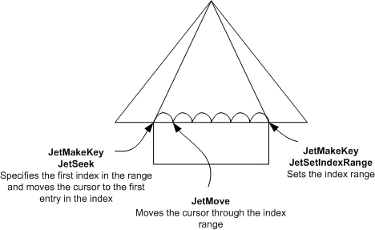

Applies to: Windows | Windows Server
Search keys are created to search for a single entry or a set of entries in an index. Search keys may only be constructed for the key columns in the index, and may contain one or more column values. The search key is constructed with a single call or a series of calls to JetMakeKey, and may be retrieved with JetRetrieveKey using JET_bitRetrieveCopy. After the search key is constructed it can be used to move the cursor to the record in the index.
There are three methods of finding records in a table:
Search for a single index entry. To do this, create the search key with JetMakeKey, and then move to that record with JetSeek.
Search the index record-by-record. Records can be traversed one record at a time by calling JetMove. The cursor can be moved to the first record in the index by specifying JET_MoveFirst in the cRow parameter of JetMove. In the same way, the cursor can be moved forward, backward, or to the last entry in the index.
Search through a set of records. To do this, set a range of index entries to search, then move through the records sequentially. For more information, see Searching Through a Set of Records section of this topic.
The diagram here shows the cursor moving through a range of index entries defined by calls to JetSeek and JetSetIndexRange.
Use the following procedure to search through a set of records in an index.
Create the search key for the first record in the set of records to be searched with JetMakeKey.
Move the cursor to the record indicated in the search key with JetSeek.
Create another search key for the last index entry in the range with JetMakeKey.
Set the index range with JetSetIndexRange using the key created in step 3.
Call JetMove to move sequentially through each record in the index range as shown in the following diagram.

The cursor in the diagram here may only move through the range of indices set in the call to JetSetIndexRange. If the application attempts to move the cursor beyond the index range, ESE returns a Jet_errNoCurrentRecord error from the call to JetMove. Note that any type of navigation with this cursor other than moving to the next or previous record will cancel the index range. See JetSetIndexRange for more information.
The type of data entered in the pvData parameter for JetMakeKey must match the type of data and properties specified for the column. For example, calling JetMakeKey with "Ben Miller" specified in the pvData parameter for a column type JET_coltypText is a valid data type match. If you want to create a search key to search between the names "Ben Miller" and "Max Stevens" in an index, move the cursor to the record with the name "Ben Miller" by calling JetSeek. Call JetMakeKey a second time and specify a pointer to a string containing the name "Max Stevens". The index range is set to limit the cursor to move between the names "Ben Miller" and "Max Stevens" in the call to JetSetIndexRange.